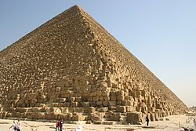
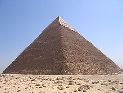
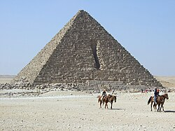

| Gízai piramisok |
| Kép |
Név |
Különlegesség |
|  |
Hufu-piramis |
- A gízai nagy piramis (más néven Hufu-piramis vagy Kheopsz-piramis, ókori nevén Ahet-Hufu, azaz Hufu horizontja vagy fényhegye) az egyiptomi óbirodalmi Hufu ( görögösen Kheopsz vagy Szúfisz, Χεοψ, Σουφις) fáraó által építtetett piramis.
- A legrégebbi, a legnagyobb és egyben az egyedüli fennmaradt csoda az ókori világ hét csodája közül.
- Az emberiség történetének egyik csúcsteljesítménye, a kínai nagy fal, a Hafré-piramis és a karnaki templom mellett a legnagyobb ókori építmény, a világ legnagyobb piramisa, amely 147 méteres magasságával négyezer évig a világ legmagasabb épülete is volt egyben.
|
|  |
Hafré-piramis |
- A Hafré-piramis (más néven Khafré-piramis vagy Kephrén-piramis, angolul Chephren's pyramid vagy Khafre's pyramid, arab nyelven هرم خفرع – haram Ḫafraʿ) a gízai piramismező G2 jelű piramisa Kairó közelében, Egyiptomban. A gízai piramisok közül látszólag ez a legmagasabb, annak ellenére, hogy valójában alacsonyab, mint Hnum-Hufu nagy piramisa.
- Ez annak köszönhető, hogy a plató magasabb pontján építették meg. Építtetője az óbirodalmi IV. dinasztia uralkodója, Hafré (kb. i. e. 2558–2532). Anyaga helyben fejtett mészkő, burkolata kiváló minőségű turai mészkő.
- A burkolat legalsó során vagy sorain asszuáni rózsaszín gránitot alkalmaztak. Méreteiben nem sokkal marad el a nagy piramistól, így mintegy négyezer évig a Hafré-piramis számított a világ második legmagasabb épületének, valamint ma is a világ legnagyobb építményei közé tartozik.
|
|  |
Menkauré-piramis |
- A Menkauré-piramis (ismert Mükerinosz-piramis néven is; egyiptomi nyelven Mer-netjer, jelentése: Az isteni piramis, vagy Mer Menkauré Netjer, jelentése: az isteni Menkauré piramisa) Egyiptomban, Kairó közelében található.
- Menkauré építtette a IV. dinasztia idejében. Diodórosz (Diodorus Siculus) és középkori arab történetírók említik, hogy még látták a piramison Menkauré nevét tartalmazó feliratot.
- Egyike a gízai piramisoknak, a három piramis közül ez a legkisebb.
- Több kisebb vagy kevésbé jelentős, és három nagyobb feltárást végeztek rajta, először Vyse és Perring 1837-ben, majd a Boston Museum és a Harvard Egyetem megbízásából George Andrew Reisner 1906-tól 1924-ig, később Rainer Stadelmann és Záhi Havássz, 1996-ban.
|